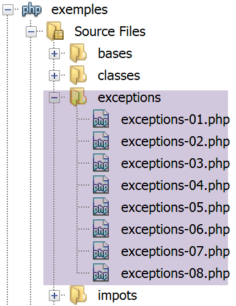

7. 异常与错误
当类方法遇到不可恢复的错误（文件不存在、未连接数据库、网络连接中断）时，它不会在控制台（文件、数据库）上显示错误，而是抛出一个异常。所有异常都继承自 [\Exception] 类。除了异常之外，PHP 的内部操作也会产生错误，其基类是 [\Error] 类。这两个类都实现了 PHP 的 [\Throwable] 接口。
7.1. 脚本目录结构

7.2. [\Throwable] 接口
[\Throwable] 接口如下：

该接口方法的作用如下：

7.3. PHP 7 中的预定义异常
PHP 7 定义了几个异常类：

- 在 [1] 中，PHP 中的预定义异常；
- 在 [2] 中，列出了 PHP 7 中来自 SPL（标准 PHP 库）的异常。SPL 是一组旨在解决开发人员经常遇到的问题的类和接口集合。
7.4. PHP 7 中的预定义错误
PHP 7 定义了几个错误类：

[\Error] 类是 PHP 中所有预定义错误的父类。[ErrorException] 类允许您将 [\Error] 类的实例封装在 [\Exception] 类的实例中。这使得仅通过处理异常即可实现标准化的错误处理。
7.5. 示例 1
第一个示例 [exceptions-01.php] 演示了 PHP 错误和异常：
<?php
// display all errors
ini_set("error_reporting", E_ALL);
ini_set("display_errors", "on");
// code --------
$var=[];
// unknown key
print $var["abcd"];
// division by zero
$var=7/0;
var_dump($var);
// fixed terminal board
$array = new \SplFixedArray(5);
$array[1] = 2;
$array[4] = "foo";
// index outside the limits
$array[5]=8;
注释
- 第 4 行：我们告诉 PHP 报告所有错误。第二个参数是请求的错误级别：


- 第 5 行：要求将错误显示在控制台上；
- 第 9 行：我们访问了数组 [$var] 中不存在的元素；
- 第 11 行：我们执行了除以零的操作；
- 第 14 行：我们创建了一个 [SplFixedArray] 类的实例。该类允许我们创建具有固定边界和整数索引的数组；
- 第 18 行：我们访问了数组中不存在的元素；
结果
注释
- 结果第 1 行：访问不存在的数组键导致 [E_NOTICE] 级别的 PHP 错误。这不会中断脚本执行；
- 结果第 3 行：将数字除以零会引发级别为 [E_WARNING] 的 PHP 错误。这不会中断脚本的执行；
- 结果第 6–9 行：访问 [SplFixedArray] 数组中不存在的索引会引发 [RuntimeException] 并中断脚本执行；
7.6. 异常处理
脚本 [exceptions-02.php] 演示了如何处理异常：
<?php
// all errors are displayed
ini_set("error_reporting", E_ALL);
ini_set("display_errors", "on");
// surround the code with a try / catch
try {
$var = [];
// unknown key
print $var["abcd"];
// division by zero
$var = 7 / 0;
var_dump($var);
// fixed terminal board
$array = new \SplFixedArray(5);
$array[1] = 2;
$array[4] = "foo";
// index outside the limits
$array[5] = 8;
// check
print "ce message ne sera pas affiché\n";
} catch (\Throwable $ex) {
// \Throwable is the interface implemented by most errors and exceptions
// exception is displayed
print "erreur, message : " . $ex->getMessage() . ", type : " . get_class($ex) . "\n";
}
注释
- 此脚本即前一段中介绍的脚本。不过，我们现在已将第 8–19 行可能引发错误的代码包裹在 try/catch 代码块中：如果第 8–21 行的代码引发（抛出）异常或错误，则由第 22–26 行的 catch 子句进行处理；
- 第 22 行：[catch] 子句的参数是要处理的异常或错误的类型。通过将类型指定为 [\Throwable]（这是一个接口），我们表明希望处理任何实现 [\Throwable] 接口的类实例。由于所有错误和异常类都实现了该接口，因此此处的 [catch] 子句可处理封装在任何类中的错误或异常；
- 第 19 行：触发错误并抛出异常的语句。一旦发生异常，控制流将转至 [catch] 子句。因此，第 19 行之后的代码将不会被执行；
结果
对结果的评论
- 第 1 行和第 3 行：我们看到 [E_NOTICE] 和 [E_WARNING] 级别的错误。这些错误不是异常，因此不会被 [catch] 子句处理；
- 第 5 行：[catch] 子句中显示了错误消息。这表明发生了继承自 [\Exception] 的异常或继承自 [\Error] 的错误。此处可见，该错误属于 [\RuntimeException] 类；
7.7. [catch] 子句的参数
让我们来分析以下 [exceptions-03.php] 脚本：
<?php
// all errors are displayed
ini_set("error_reporting", E_ALL);
ini_set("display_errors", "on");
// a fixed terminal board
$array = new \SplFixedArray(5);
try {
// index outside the limits
$array[5] = 8;
} catch (\Throwable $ex) {
// error message display
print "Erreur 1 : " . $ex->getMessage() . "\n";
}
try {
// index outside the limits
$array[5] = 8;
} catch (\Exception $ex) {
// error message display
print "Erreur 2 : " . $ex->getMessage() . "\n";
}
try {
// index outside the limits
$array[5] = 8;
} catch (\RuntimeException $ex) {
// error message display
print "Erreur 3 : " . $ex->getMessage() . "\n";
}
try {
// division by 0
intdiv(5, 0);
} catch (\Throwable $ex) {
// error message display
print "Erreur 4 : " . $ex->getMessage() . "\n";
}
try {
// division by 0
intdiv(5, 0);
} catch (\DivisionByzeroError $ex) {
// error message display
print "Erreur 5 : " . $ex->getMessage() . "\n";
}
try {
// division by 0
intdiv(5, 0);
} catch (\Error $ex) {
// error message display
print "Erreur 6 : " . $ex->getMessage() . "\n";
}
try {
// division by 0
intdiv(5, 0);
} catch (\Exception $ex) {
// error message display
print "Erreur 6 : " . $ex->getMessage() . "\n";
}
注释
- 第 8–31 行：处理 [\SplFixedArray] 类因使用错误索引而引发的异常的 3 种不同方法。我们看到该错误会引发 [RuntimeException]；
- 第 12 行：处理类型为 [\Throwable] 的错误。这是有效的，因为 [RuntimeException] 类型继承自 [\Exception] 类型，而 [\Exception] 类型实现了 [\Throwable] 接口；
- 第 20 行：处理类型为 [\Exception] 的错误。这是有效的，因为 [RuntimeException] 类型继承自 [\Exception] 类型；
- 第 28 行：处理类型为 [\RuntimeException] 的错误。这是首选的方法，因为它与生成的异常类型完全一致；
- 第 32–62 行：当向 [intdiv] 函数传入等于 0 的除数时，处理该函数生成的异常的 4 种不同方式。[intdiv(int $dividend, int $divisor): int] 函数执行整数除法 $dividend / $divisor。当除数为零时，会抛出 [\DivisionByzeroError] 异常；
- 第 35 行：我们捕获任何实现 [\Throwable] 接口的错误。这是有效的；
- 第 43 行：我们捕获错误的确切类型：这是首选的方法；
- 第 51 行：捕获了类型 [\Error]。这是有效的，因为类 [DivisionByzeroError] 继承自类 [Error]；
- 第 59 行：捕获了 [\Exception] 类型。这是无效的，因为 [DivisionByzeroError] 类与 [\Exception] 类之间没有关联；
结果
7.8. [finally] 子句
try/catch 结构可以包含第三个元素，从而形成 try/catch/finally 结构。[finally] 子句中的代码在以下两种情况下会被执行：
- [try] 子句未抛出异常。此时该子句将完整执行，随后执行流程进入 [finally] 子句并完整执行；
- [try] 子句抛出异常。此时，[try] 子句将执行至抛出异常的语句处，随后执行流程转至 [catch] 子句并完整执行；接着执行流程转至 [finally] 子句并完整执行；
最后，[finally] 代码块中的代码总是会被执行。这种场景在以下情况下非常有用：
- 在 [try] 块中，代码已获取了资源（文件、数据库、网络连接、队列）。这些资源通常占用大量内存，因此必须尽快释放（通常称为“关闭”）；
- 如果资源是在 [try] 块中获取的，则应将资源释放操作放置在 [finally] 块中。这确保了在所有情况下（无论是否发生错误），已获取的资源都会被释放回系统；
以下脚本 [examples/exceptions/exceptions-04.php] 演示了 [finally] 子句在各种情况下的工作原理：
<?php
// or create an exception instance
$e = new \Exception("Erreur…");
var_dump($e);
// first test
try {
print "Premier test\n";
throw $e;
} catch (\Exception $ex1) {
print $ex1->getMessage() . "\n";
} finally {
print "Terminé\n";
}
// second test
try {
print "Second test\n";
} catch (\Exception $ex1) {
print $ex1->getMessage() . "\n";
} finally {
print "Terminé\n";
}
// third test
try {
print "Troisième test\n";
return;
} catch (\Exception $ex1) {
print $ex1->getMessage() . "\n";
} finally {
print "Terminé\n";
}
代码注释
- 第 4 行：$e 是预定义的 [\Exception] 类的实例。我们将在多个位置抛出它；
- 第 8–15 行：$e 异常在 [try] 代码块中被抛出（第 10 行）；
- 第 11 行：捕获了 [\Exception] 异常，并将错误消息写入控制台；
- 第 13–15 行：[finally] 子句打印一条消息。根据前文所述，无论 [try] 块中是否发生错误，这条消息都应始终被打印；
- 第 18–24 行：[try] 块中没有错误。此时我们也应进入 [finally] 块；
- 第 27–34 行：try 代码块中包含一个 [return] 语句，且未发生错误。因此，人们可能会疑惑：我们是否会进入 [finally] 子句？执行结果表明，我们确实会进入；
结果
让我们再来看一个案例 [exceptions-05.php]：
<?php
// fourth test
try {
print "Quatrième test\n";
exit;
} finally {
print "Terminé\n";
}
注释
- 第 6 行：[exit] 语句会立即停止脚本的运行：[finally] 子句不会被执行；
- 第 4–9 行：一个不包含 [catch] 子句的 try / catch / finally 示例。这是可行的；
结果
7.9. 创建自己的异常类
在规模较大的项目中，通过将不同错误封装在不同的异常类中来区分它们是非常有用的。在之前的脚本中，我们看到任何异常都可以通过 [catch (\Throwable)] 子句来捕获。如果不知道捕获到的错误具体是什么，且所有错误的处理方式都相同，建议采用这种方法。虽然有时确实如此，但通常需要根据错误的具体类型来调整处理方式。 因此，你必须区分这些错误。
让我们来分析以下 [exceptions-06.php] 脚本：
<?php
// we define our own family of exceptions
class Exception1 extends \RuntimeException {
}
class Exception2 extends \RuntimeException {
}
// or use our exceptions
$e1 = new Exception1("Erreur1…");
var_dump($e1);
$e2 = new Exception2("Erreur2…");
var_dump($e2);
// first test
print ("premier test\n");
try {
// throw an Exception1 type
throw $e1;
} catch (Exception1 $ex1) {
print "Exception 1" . "\n";
print $ex1->getMessage() . "\n";
} catch (Exception2 $ex2) {
print "Exception 2" . "\n";
print $ex2->getMessage() . "\n";
}
// second test
print ("second test\n");
try {
// throw an Exception2 type
throw $e2;
} catch (Exception1 $ex1) {
print "Exception 1" . "\n";
print $ex1->getMessage() . "\n";
} catch (Exception2 $ex2) {
print "Exception 2" . "\n";
print $ex2->getMessage() . "\n";
}
// third test
print ("troisième test\n");
try {
// throw an Exception1 type
throw $e1;
} catch (Exception1 | Exception2 $ex) {
print "Exception 1 ou 2" . "\n";
print $ex->getMessage() . "\n";
}
// fourth test
print ("quatrième test\n");
try {
// throw an Exception2 type
throw $e2;
} catch (Exception1 | Exception2 $ex) {
print "Exception 1 ou 2" . "\n";
print $ex->getMessage() . "\n";
}
注释
- 第 4–10 行：我们定义了两个类 [Exception1] 和 [Exception2]，它们都继承自预定义类 [\RuntimeException]。这两个类的类体为空。换句话说，我们仅将它们用作类型定义（ ）：正是因为它们的类型不同，我们才能在 [catch] 子句中区分这两个异常；
- 第 13–16 行：我们定义了两个变量 $e1 和 $e2，它们的类型分别是 [Exception1] 和 [Exception2]；
- 第 20–29 行：这里采用 try/catch/catch 结构。这使我们能够通过不同的 [catch] 子句处理不同类型的异常；
- 第 23 行：捕获类型为 [Exception1] 的异常；
- 第 26 行：捕获类型为 [Exception2] 的异常；
- 第 49 行：捕获类型为 [Exception1] 或 (|) [Exception2] 的异常；
结果
对结果的评论
- 第 1–17 行：异常的“内容”：
- 第2–3行：错误消息；
- 第 6–7 行：错误代码；
- 第 8–9 行：发生异常的文件名；
- 第 10–11 行：发生异常的行号；
- 第 15–16 行：前一个异常。一个异常可以封装另一个异常，从而定义一个异常堆栈。[previous] 属性允许你访问这个堆栈；
7.10. 重新抛出异常
异常可以被抛出多次，如下面的 [exceptions-07.php] 脚本所示：
<?php
try {
try {
// throw an exception
throw new \Exception("test");
} catch (\Exception $ex) {
// the intercepted exception is re-launched
throw $ex;
} finally {
// we'll make it to the finally
print "finally 1\n";
}
} catch (\Exception $ex2) {
// the initial exception is recovered
print $ex2->getMessage() . " dans try / catch / finally externe\n";
} finally {
// we'll make it to the finally
print "finally 2\n";
}
注释
- 第 6 行：我们抛出一个异常；
- 第 7 行：我们捕获它；
- 第 9 行：我们重新抛出该异常。随后它会穿过顶层的 try/catch/finally 代码块；
- 第 14 行：它再次被捕获；
- 第 10–12 行：执行结果表明，即使在第 9 行的 [throw] 之后，控制流确实进入了 try/catch/finally 代码块的 [finally] 子句；
结果
7.11. 处理异常堆栈
一个异常可以封装另一个异常，而该异常又可以封装另一个异常，最终形成异常堆栈。以下是一个示例 [exceptions-08.php]：
注释
- 第 4–14 行：定义三个从预定义的 [RuntimeException] 异常派生的异常类；
- 第 17 行：将 [Exception3] 类的实例封装在 [Exception2] 类的实例中，而 [Exception2] 类的实例又被封装在 [Exception1] 类的实例中。此处使用的构造函数是 [Exception] 类的构造函数：

构造函数的第三个参数允许对异常进行封装。这在以下场景中可能很有用：
- 我们定义了一个方法 M，该方法可能抛出类型为 [Exception1] 的异常，且出于兼容性考虑（例如与某个接口的兼容），仅抛出此类型的异常；
- 然而，方法 M 内部可能发生其他类型的异常。为了将错误回传给调用方法 M 的代码，我们将把这些异常封装在 [Exception1] 类型中，并抛出该类型。这确保了封装异常中所包含的信息——即错误的原始原因——不会丢失；
- 第 20–27 行展示了如何管理嵌套在异常中的异常堆栈；
结果
object(Exception1)#1 (7) {
["message":protected]=>
string(11) "Erreur 1…"
["string":"Exception":private]=>
string(0) ""
["code":protected]=>
int(1)
["file":protected]=>
string(76) "C:\Data\st-2019\dev\php7\php5-exemples\exemples\exceptions\exceptions-08.php"
["line":protected]=>
int(17)
["trace":"Exception":private]=>
array(0) {
}
["previous":"Exception":private]=>
object(Exception2)#2 (7) {
["message":protected]=>
string(11) "Erreur 2…"
["string":"Exception":private]=>
string(0) ""
["code":protected]=>
int(2)
["file":protected]=>
string(76) "C:\Data\st-2019\dev\php7\php5-exemples\exemples\exceptions\exceptions-08.php"
["line":protected]=>
int(17)
["trace":"Exception":private]=>
array(0) {
}
["previous":"Exception":private]=>
object(Exception3)#3 (7) {
["message":protected]=>
string(11) "Erreur 3…"
["string":"Exception":private]=>
string(0) ""
["code":protected]=>
int(0)
["file":protected]=>
string(76) "C:\Data\st-2019\dev\php7\php5-exemples\exemples\exceptions\exceptions-08.php"
["line":protected]=>
int(17)
["trace":"Exception":private]=>
array(0) {
}
["previous":"Exception":private]=>
NULL
}
}
}
Erreur 1…
Erreur 2…
Erreur 3…